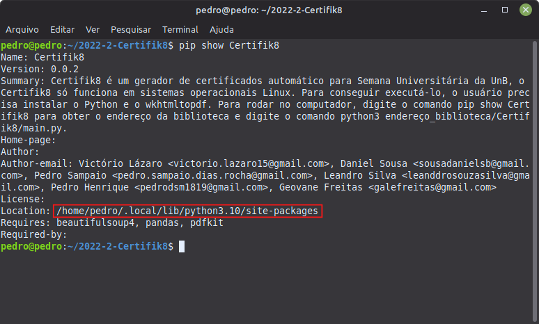
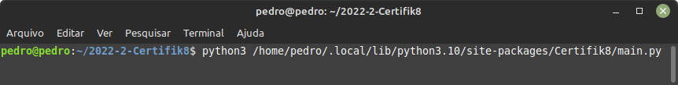
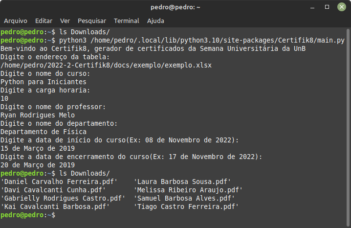

2022-2-Certifik8


Certifik8
Conteúdo
üìù Sobre o projeto
Certifik8 é um gerador de certificados automático criado em Python. O projeto busca facilitar a geração massiva de documentos a serem emitidos após algum evento.
üíª Tecnologias
Tecnologias utilizadas neste projeto:
ü§ñ Funcionalidade
O Certifik8 necessita de duas entradas de dados, uma tabela (Excel) no formato XLSX, e dados gerais sobre o evento. Para cada conjunto de informações passadas, um documento com um modelo já preestabelecido é gerado. Os certificados em formato PDF são salvos diretamente na pasta Downloads do computador do usuário.

❗ Requisitos
O Certifik8 só funciona em sistemas operacionais Linux.
Testado no: - Linux Mint 21 - Ubuntu 22.04.01

Para conseguir executá-lo, o usuário precisa instalar:
- Python3 e Pip
sudo apt install python3 && sudo apt install python3-pip
- As bibliotecas pdfkit, BeautifulSoup e Pandas
pip install pdfkit
pip install beautifulsoup4
pip install pandas
- Instalar a ferramenta wkhtmltopdf
sudo apt install wkhtmltopdf
üõû Como rodar
- üë©‚Äçü¶∞ Usuário
1.Instalando o Certifik8:
pip install -i https://test.pypi.org/simple/ Certifik8==0.0.2
2.Digite o comando para obter o endereço da biblioteca:
pip show Certifik8

Copie o endereço após a "Location", marcado de vermelho na imagem.
3.Rodando a aplicação:
python3 {endereço_biblioteca}/Certifik8/main.py

Substitua a chave {endereço_biblioteca} pelo endereço copiado no passo 2.
4.Insira os dados conforme pedido:
-
O endereço da tabela deve ser absoluto.
-
Estrutura da tabela Excel (Exemplo):
- Obs: a tabela deve seguir essa estrutura obrigatoriamente.
| 1 | Nome | cpf | Função | Frequência |
|---|---|---|---|---|
| 2 | Samuel Barbosa Alves | 729.334.326-41 | PARTICIPANTE | 100 |
| 3 | Melissa Ribeiro Araujo | 201.544.482-30 | MONITOR | 97 |
| 4 | Gabrielly Rodrigues Castro | 451.016.912-40 | PARTICIPANTE | 80 |
| ... | ... | ... | ... | ... |
Demonstração de funcionalidade.

- üßôü躂Äç‚ôÄÔ∏è Desenvolvimento local
1.Clone o repositório
git clone https://github.com/fga-eps-mds/2022-2-Certifik8.git
2.Rode os comandos:
sudo docker build -t squad08
docker run --name cont_squad08 -it squad08
ü뮂Äçüíª Desenvolvedores

Pedro Sampaio |

Pedro Henrique |

Victório Lazaro |

Daniel Sousa |

Leandro Silva |

Geovane Freitas |